Overview
Losing employees is expensive — this finds why people leave and flags who might.
- McCurr Healthcare Consultancy (a global MNC) wants to retain its best talent and curb costly turnover.
- Attrition drives rehiring cost, lost institutional knowledge, and team disruption.
- Objective 1 - identify the key factors that drive an employee to leave.
- Objective 2 - build a model that predicts whether an employee will attrite.
Methodology
flowchart LR A[Raw Data] --> B[Clean & Encode] B --> C[EDA] C --> D[Train/Test Split] D --> E["Logistic Regression / KNN / LDA / QDA"] E --> F["Tune (Cross-Validation)"] F --> G["Evaluate: Recall / F1 / ROC"] G --> H[Interpret]
The Data
One row per employee, mixing personal details with work-life metrics.
- 2,940 employees described by 34 attributes, with no missing values.
- Demographics (age, distance from home) plus work metrics (income, overtime, tenure, role).
- Target: a binary Attrition flag - stayed vs left.
- Dropped non-informative fields: EmployeeNumber (ID), Over18 and StandardHours (single value).
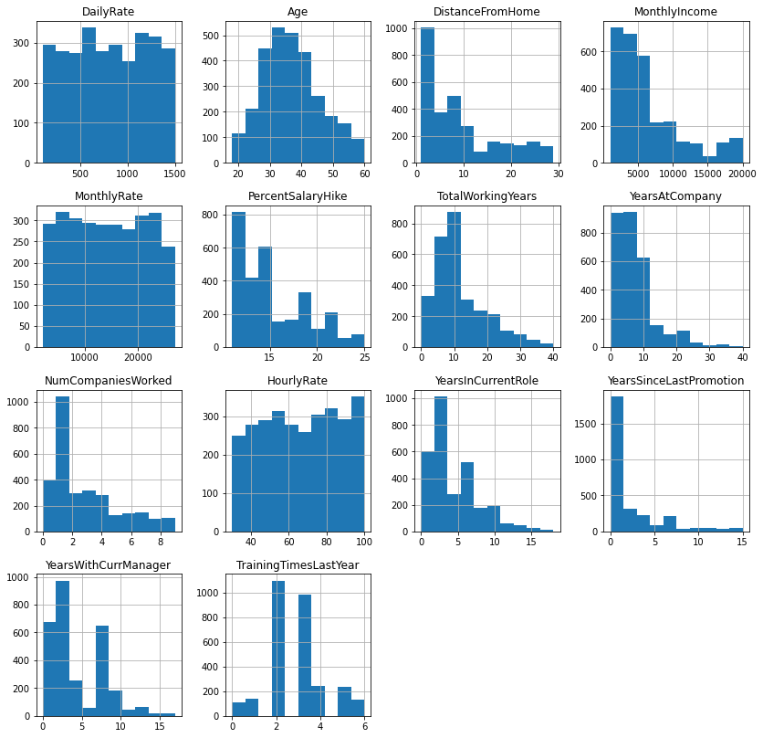
Exploratory Analysis
What the data looks like before any modeling.
- Overall attrition rate is 16% - a minority class, which is the real-world difficulty.
- About 28% of employees work overtime; most have traveled only rarely for work.
- Age is roughly normal (most 25-50); many employees live close to the office.
- Income, total experience, tenure, and age are strongly correlated with one another.
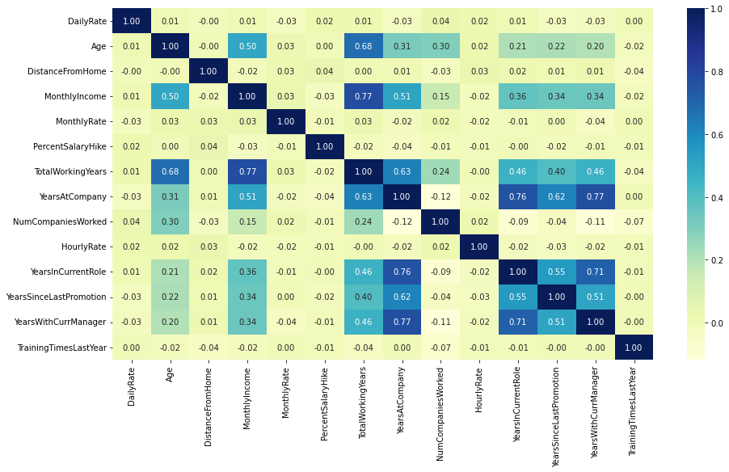
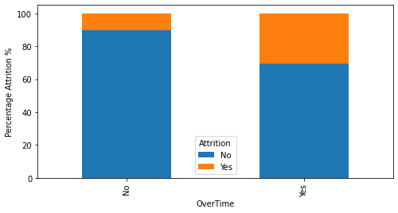
Key Drivers of Attrition
The factors that most separate leavers from stayers.
- Overtime is the strongest signal: >30% of overtime employees leave vs ~10% of those who do not.
- Leavers earn ~30% less income and have ~30% less work experience on average.
- Early-tenure employees and those living further from work are likelier to go.
- SHAP confirms OverTime, monthly income, and tenure as the top predictors.
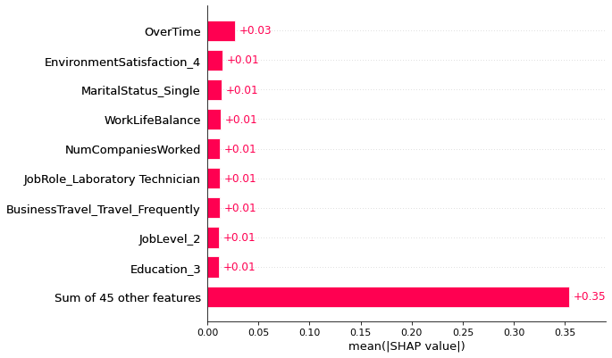
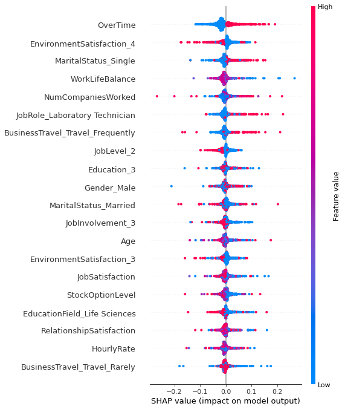
Modeling & Results
How the prediction model was built and how well it performed.
- Pipeline: clean -> encode categoricals -> train/test split -> model -> tune -> interpret.
- Compared Logistic Regression, KNN, and Discriminant Analysis (LDA/QDA), tuned with GridSearchCV.
- Recall was prioritized - catching real leavers matters more than a few false alarms.
- SHAP used to explain predictions, not just score them.
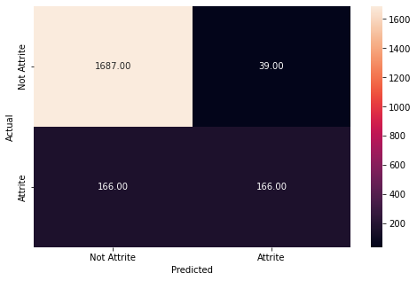
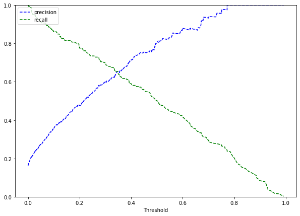
Key Takeaways
What HR should actually do with this.
- Focus retention on overtime-heavy, lower-paid, and early-tenure employees.
- Use the model to flag at-risk staff early so managers can intervene.
- With only 16% positives, recall and threshold choice matter more than raw accuracy.
- Built with: pandas, scikit-learn, SHAP, seaborn / matplotlib.
More Visualizations
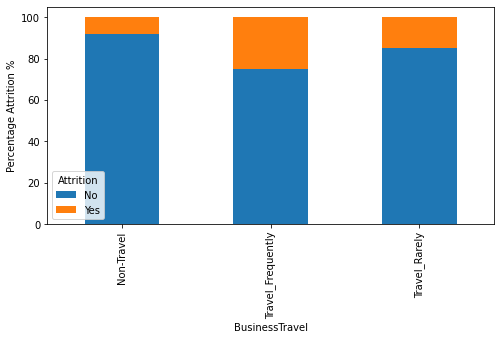
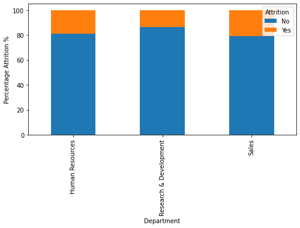
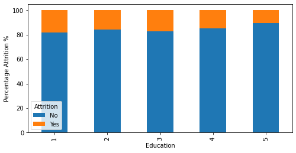
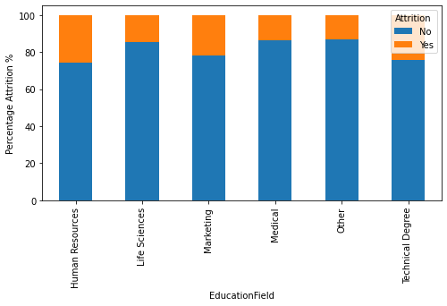
Tech Stack
- pandas — data wrangling and tabular manipulation
- numpy — fast numerical arrays
- scikit-learn — modeling, pipelines, and evaluation
- seaborn — statistical visualization
- matplotlib — plotting
- shap — model explainability
Attribution
This project was completed as part of the MIT Applied Data Science Program (MIT IDSS / Great Learning). The program provided the case-study scaffolding; the analysis, code, and results are my own. Published with permission, for portfolio use only.